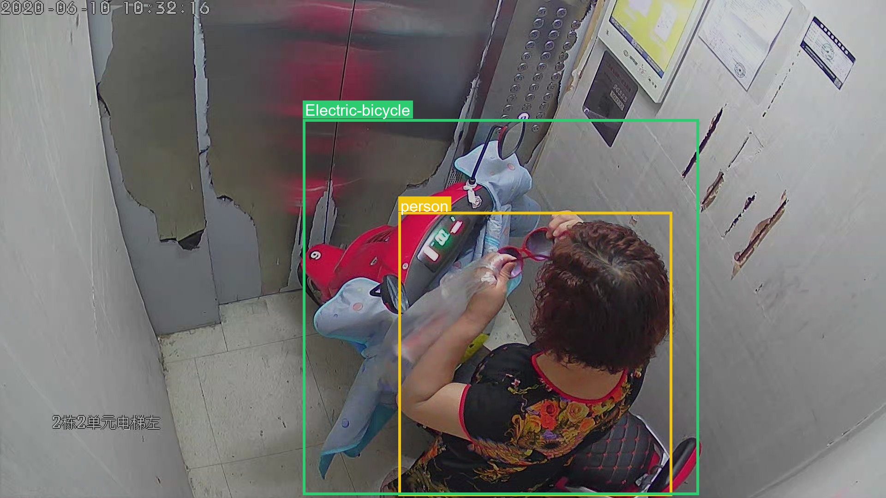
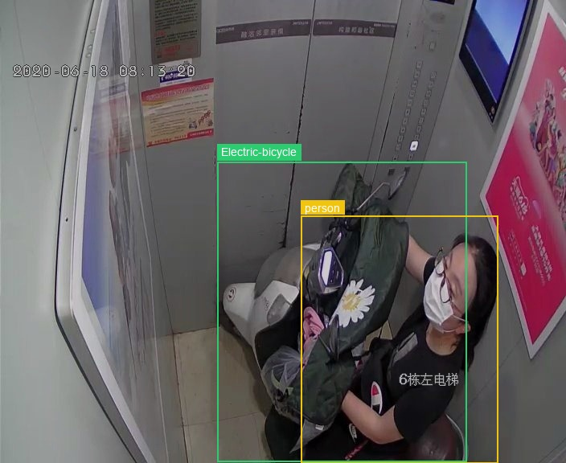
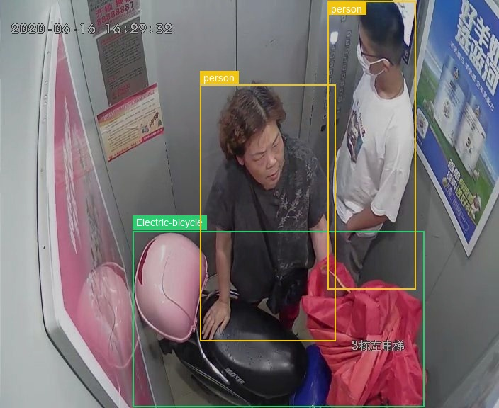
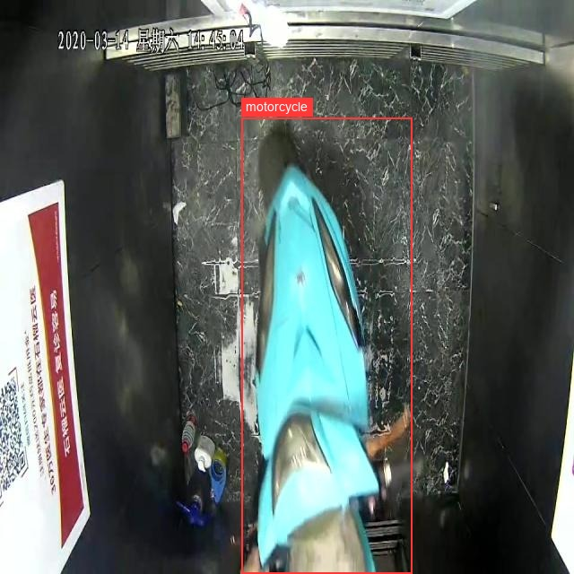
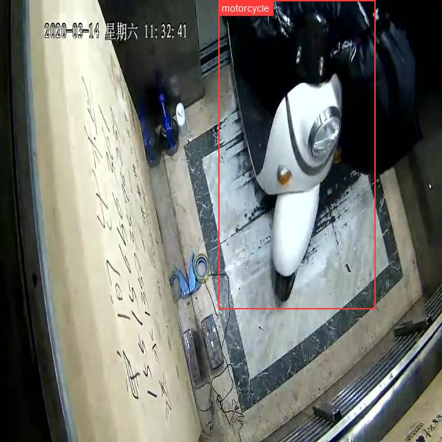
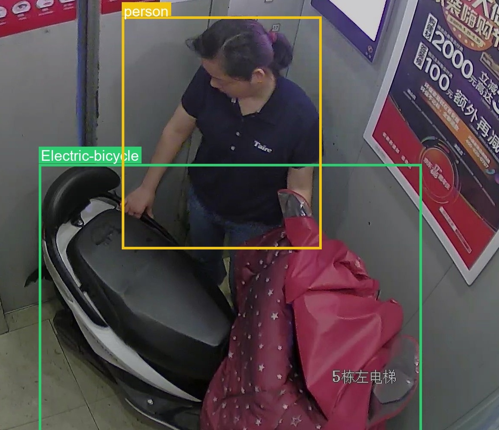
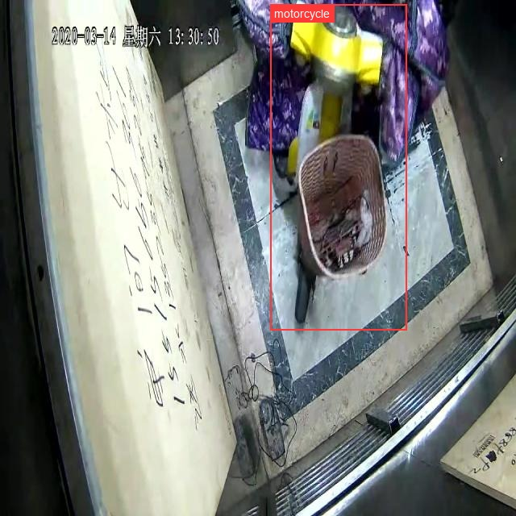
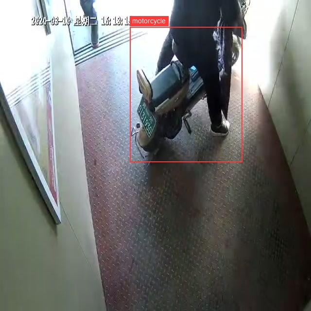

基于 YOLO11n 深度学习模型，自动识别电梯轿厢内的电动车、自行车、婴儿车、行人与轮椅，为电动车违规入梯监管提供实时、精准的视觉感知能力。

从数据到模型，一套完整的电梯安全视觉感知方案
本项目聚焦于电梯轿厢内电动车的自动检测问题。通过融合两个公开数据集（共 13,992 张图像）， 使用轻量级 YOLO11n 模型进行训练，在保证检测精度的同时兼顾推理速度， 可部署于边缘设备实现实时预警。项目提供完整的数据处理、训练、推理与可视化流程。
五步完成从原始图像到检测结果的完整链路
从 Ultralytics Platform 导出双数据集 NDJSON
解析标注、类别统一、格式转换为 YOLO
YOLO11n 双数据集分别训练 + 合并训练
mAP50 / mAP50-95 / P / R 多指标对比
图像 / 视频 / 摄像头检测，导出 ONNX
两个公开数据集，合计 13,992 张标注图像




类别：Baby-carriage / Electric-bicycle / bicycle / person / wheelchair（合并时 motorcycle → Electric-bicycle）
三组训练方案的性能对比
| 实验 | 数据集 | 类别数 | 图像数 | mAP50 | mAP50-95 | P | R |
|---|---|---|---|---|---|---|---|
| Exp 1 | electric-bicycle-entering-elevator | 5 | 8,193 | — | — | — | — |
| Exp 2 | lift-ebike | 1 | 5,799 | — | — | — | — |
| Exp 3 | 合并数据集 | 5 | 13,992 | — | — | — | — |
💡 指标待填入：训练完成后在 Ultralytics Platform 模型详情页的 Results / Metrics 中查看 mAP50、mAP50-95、Precision、Recall。
原始图像 vs 标注结果



三步上手训练与推理